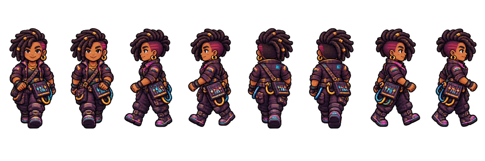
Personagens e movimentação
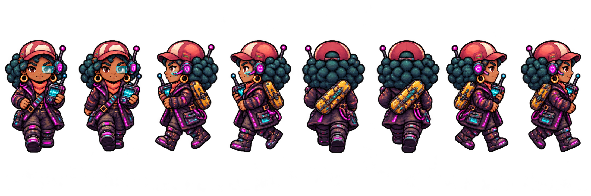
Nara · permite a chegada antecipada ao canal
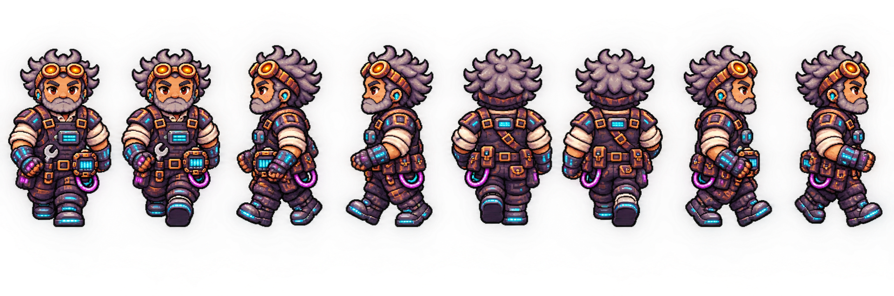
Ciro
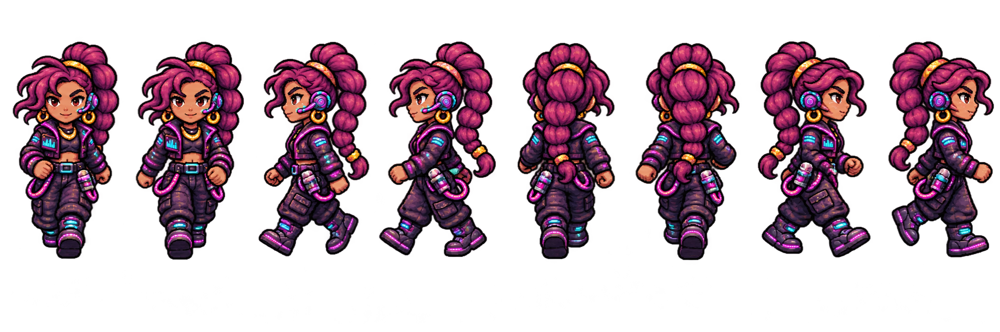
Vega
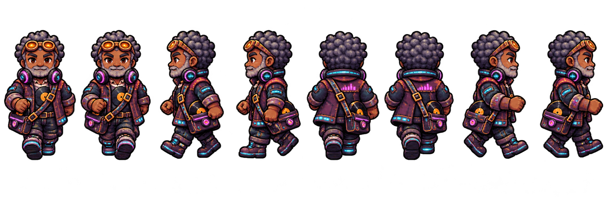
Dimas · dono da loja de discos
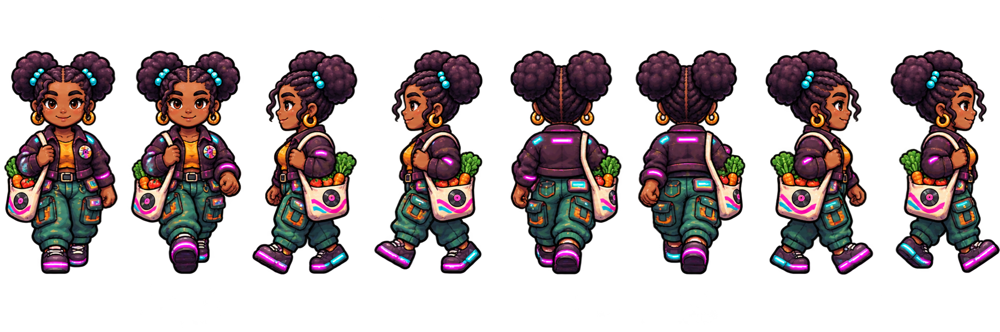
Moradora do distrito A
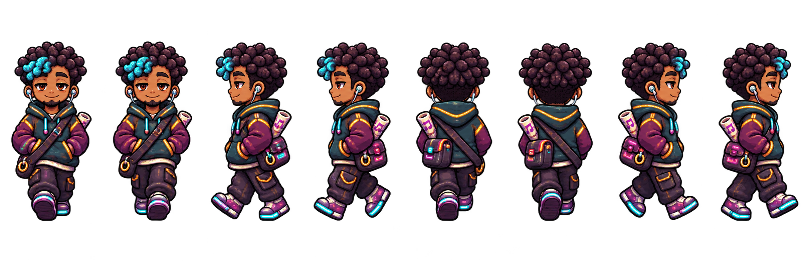
Morador do distrito B
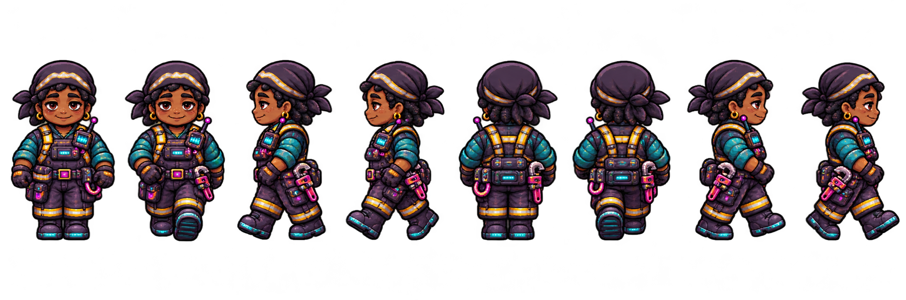
Trabalhadora do canal
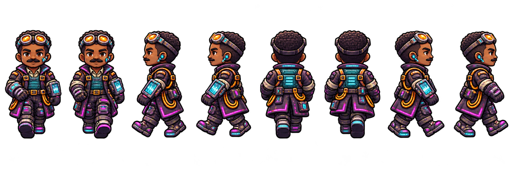
Operador da usina
Ambiente e objetos interativos
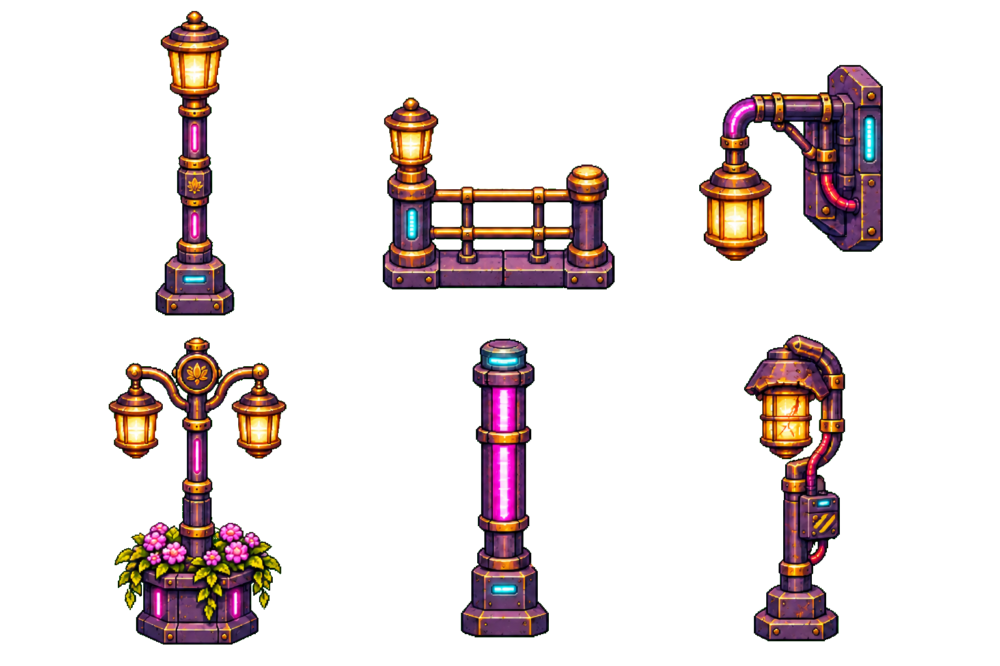
Postes e luminárias · 6 itens
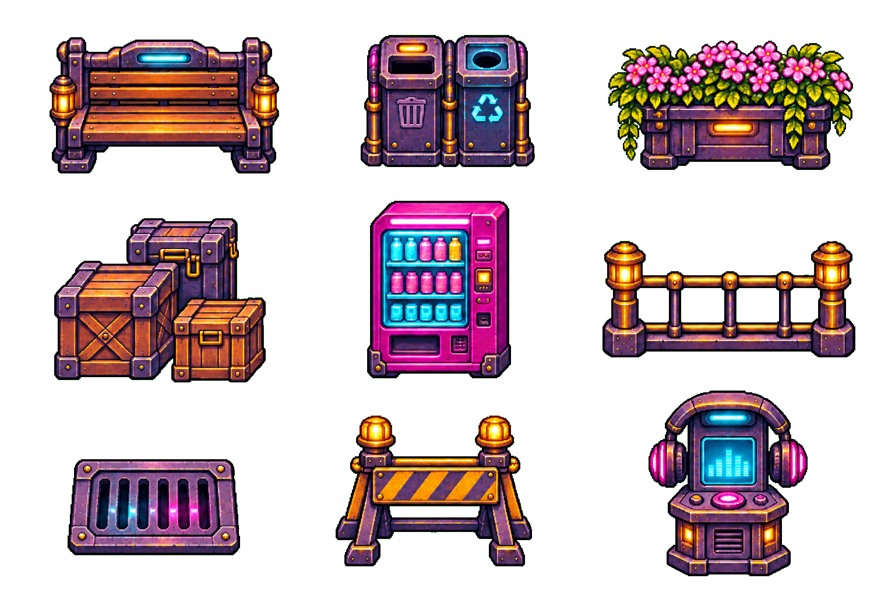
Mobiliário urbano · 9 itens
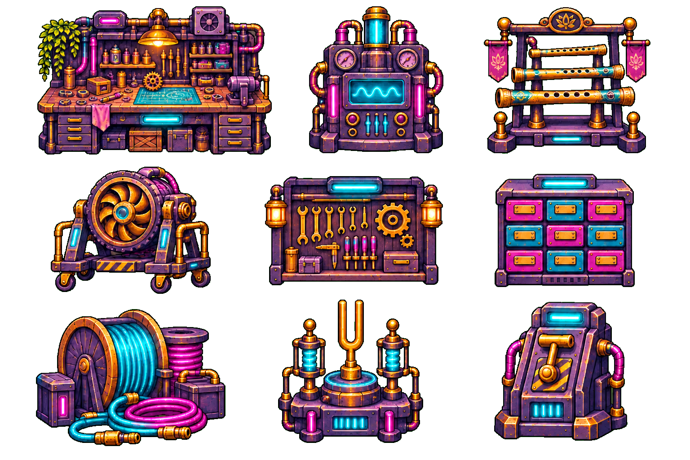
Oficina de Ciro · 9 itens
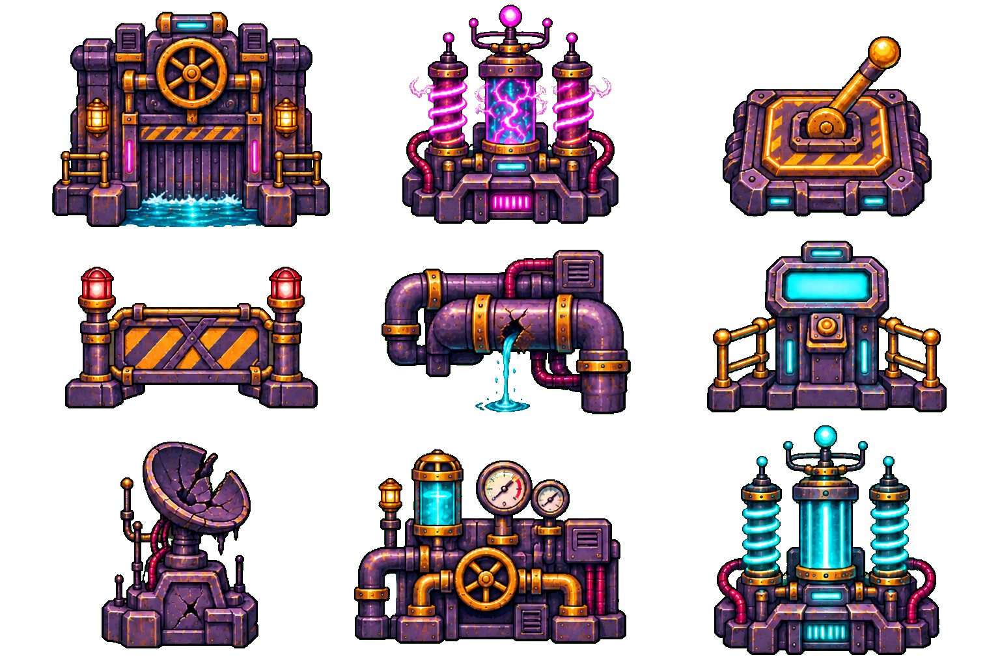
Canal e interferência · 9 itens
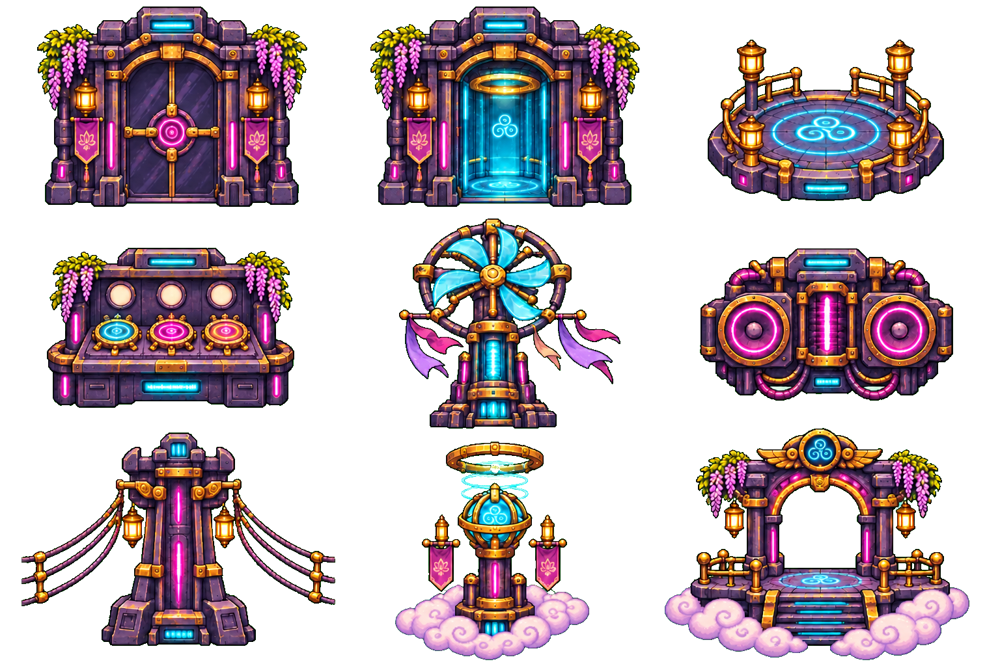